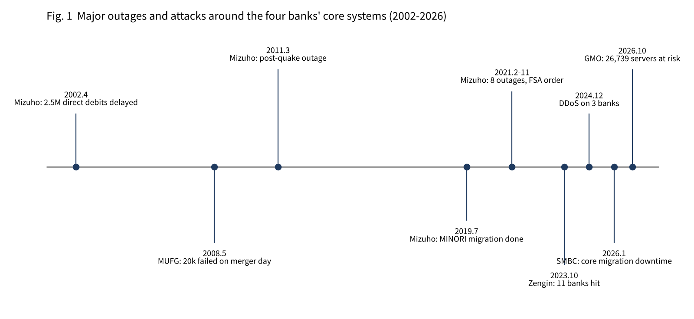
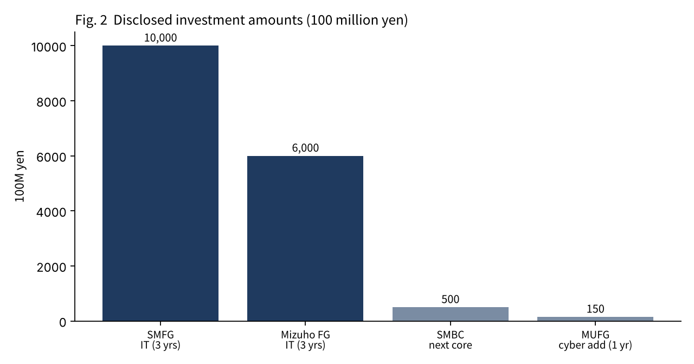

Are the core banking systems of Japan's three megabanks and Resona really old and dangerous?
In October 2026, the week unauthorized access to GMO's servers came to light, the four Japanese bank stocks I hold all fell together. On X I kept seeing the claim that bank systems are fragile.
Yet few articles lay out in numbers what the four banks' core systems are actually made of, what outages they have had, and how much they spend on defense.
Here I go through the core systems of MUFG, SMBC, Mizuho and Resona one by one, using each bank's disclosures and documents from the FSA and METI, and at the end give my own verdict on whether they are dangerous.

What a core system is. All four still run on mainframes
The core system, or account system, is the center of a bank: it records deposit balances, transfers and loans. If it stops, ATMs and transfers stop.
To state the conclusion first, all four banks still keep the center of their core systems on mainframes (large dedicated computers). But they place the surroundings, such as online banking and APIs, on open systems (ordinary servers) and are moving toward combining the two. No major bank has moved everything to the cloud yet.
Whether the old language COBOL is in use was not stated in any of the four banks' public documents.
SMBC: a 1-trillion-yen IT budget and a migration in 2026
Sumitomo Mitsui Banking Corporation's next core system combines NEC's next-generation mainframe with an open-systems platform. On the open side sits a database that mirrors the full ledger in real time, connected outward through APIs.
The build is led by the Japan Research Institute, at a scale of roughly 50 billion yen (about $316 million) and about 20,000 person-months. The original target was completion in fiscal 2025; the plan has moved to fiscal 2026. For the migration, ATMs and online banking were suspended on January 11 and 12, 2026, with the next suspension announced for July 19 and 20. Whether the migration is complete has not yet been disclosed.
On defense, Sumitomo Mitsui Financial Group set IT investment at about 1 trillion yen (about $6.33 billion) over three years in its new medium-term plan, 25% above the previous plan's 800 billion yen, and said to be a first for a Japanese bank. It has more than 850 specialist staff and a 24/7 monitoring setup linked with SOCs in the US, Europe and Asia. It has also set up a team that treats high-performance AI as a threat.
MUFG Bank: an IBM mainframe, and a joint venture with GMO
MUFG Bank consolidated onto the IBM system of the former Bank of Tokyo-Mitsubishi in its 2008 merger. On the first day of the merger, about 20,000 transactions at Seven Bank ATMs failed.
In October 2024 it announced, together with IBM Japan, a shared core-banking platform for regional banks, with IBM mainframes placed in MUFG Bank's own data centers. A director said that work requiring high reliability is designed on the premise of mainframes.
At the same time, it chose Google Cloud for the platform of a new digital bank. That bank received its license in September 2026 and plans to launch in January to March 2027.
Its CSIRT is called MUFG-CERT. In fiscal 2025, expenses for infrastructure and systems rose by about 60 billion yen (about $380 million), including about 15 billion yen (about $95 million) for cyber and about 10 billion yen (about $63 million) for generative AI. In December 2025 it announced a joint venture, MUFG GMO Security, with a subsidiary of GMO Internet Group: MUFG Bank 50.1%, GMO Cybersecurity by Ierae 40.0%, GMO Internet Group 9.9%. One of the banks is partnered on defense with the very company at the center of this month's incident.
Mizuho Bank: MINORI, and eight outages in 2021
Mizuho Bank's core system is called MINORI. Migration began in June 2018 and finished in July 2019. It merged the core systems of the three former banks into one, cut mainframes from 19 to 5, and was built by several vendors. The total investment has not been disclosed.
Its outage history is the heaviest of the four. In April 2002, right after the bank's launch, about 2.5 million direct debits were delayed; in March 2011, right after the earthquake, exchange processing was delayed and ATMs stopped. Both drew business improvement orders.
In 2021, on February 28, 80% of ATMs nationwide stopped and swallowed cards and passbooks. Outages continued, eight in the year. On November 26 the FSA issued a business improvement order, and the same day the Ministry of Finance issued a corrective order under the foreign exchange law.
For the three years from 2023, the plan is about 600 billion yen (about $3.80 billion) of IT investment, with about 70% for preventing recurrence and system renewal. MINORI is nearly ten years old, and plans to move several systems to the cloud have been published.
Resona Bank: an IBM mainframe, and a decade that cut costs 46%
Resona Bank has run its core system around IBM Japan mainframes. Switchovers took place in 2000, 2003, 2008 and 2015, with the 2015 switch enabling 24/7 operation. Operations are outsourced to several companies, including NTT Data and IBM Japan.
What stands out is how it cut costs. Group system costs fell from 93.1 billion yen in fiscal 2003 to 50 billion yen in fiscal 2014, about 46%. It is building an API platform to shift toward open systems, and plans to reduce information-system mainframes from 9 to 7. It announced a new medium-term plan in March 2026, but IT and security investment amounts could not be confirmed from public documents.
Outages and attacks that crossed all four banks
Some failures do not stay inside one bank. The Zengin Net outage of October 10 and 11, 2023 affected 11 banks including MUFG Bank and Resona Bank. Over two days, 2.55 million transfers to other banks and 2.51 million within the same bank were affected, and 870,000 outbound transfers went unprocessed. The cause was a fault in the fee-calculation program during an upgrade of relay computers.
As for attacks, DDoS attacks continued at the end of 2024. MUFG Bank's online banking became unstable from December 26 and recovered on the morning of the 28th. Resona's four banks lost retail online banking from the night of December 29 to the early hours of the 30th, with a similar outage on January 7, 2025. Mizuho Direct became unstable from the morning of December 31. No damage at SMBC could be confirmed.
| Date | Bank | What happened |
|---|---|---|
| Apr 2002 | Mizuho | About 2.5M direct debits delayed. Improvement order |
| May 2008 | Bank of Tokyo-Mitsubishi UFJ | About 20,000 transactions failed on merger day |
| Mar 2011 | Mizuho | Outage right after the earthquake. Improvement order |
| Jul 2019 | Mizuho | Migration to MINORI completed |
| Feb-Nov 2021 | Mizuho | Eight outages. Improvement order on Nov 26 |
| Oct 2023 | Zengin Net | 11 banks affected. 870,000 outbound transfers unprocessed |
| Dec 2024 | MUFG, Resona, Mizuho | Online banking unstable under DDoS attacks |
| Jan 2026 | SMBC | Downtime for migration to the new core. MUFG GMO Security founded |
| Oct 2026 | GMO group | About 890,000 records from infoQ; 26,739 Onamae.com servers possibly affected |

How much goes into defense
Lining up the disclosed figures, SMFG's 1 trillion yen over three years and Mizuho FG's roughly 600 billion yen over three years stand out. MUFG added about 15 billion yen for cyber in fiscal 2025 alone. Resona's number is not an investment figure but the cost side: 46% cut over ten years.


The FSA published its Guidelines on Cybersecurity in the Financial Sector on October 4, 2024, effective the same day. They call for management-led, group-wide effort that values substance over form. In October 2025 the FSA revised its supervisory guidelines, requiring phishing-resistant multi-factor authentication by the end of June 2026. The cross-industry exercise Delta Wall is held every year.
On the other hand, METI's DX Report warned of economic losses of up to 12 trillion yen a year from 2025 onward, and projected that the share of core systems running for more than 21 years would rise to 60% in 2025. Bank core systems are part of that.
How I see it
Are they old? Yes. All four keep their center on mainframes, and except for Mizuho, they are updating and running platforms built in the 2000s or earlier. But being old and being dangerous are different things, I think.
Looking at the outage history, the danger lies in the seams more than in the age. Mizuho's 2021 came right after merging three banks' systems; the 2023 Zengin Net outage came from a faulty upgrade; MUFG's 2008 came on merger day. Accidents happen when systems change. With SMBC in the middle of its 2026 migration, this is the time to watch.
Against attacks, the four banks at least disclose the scale of their spending and their setup. In what I checked, I found no report that directly tied the GMO incident to the fall in bank stocks. The October 23 drop in bank shares was explained in the press by lower long-term yields.
So this week, too, I did not sell a single share of the four banks. The bigger the money, the more I keep it at large institutions that hold up when things stop; that view has not changed. What I watch is whether SMBC's migration finishes cleanly, and how fast, and what, each bank discloses when an outage occurs. Whether they are dangerous, I want to judge by the seams and the speed of disclosure, not by age.
Rate: 1 USD = 158.10 JPY (as of Oct 25, 2026)
Sources
- SMBC, "On the next core banking system" (Nov 11, 2020) https://www.smbc.co.jp/news/pdf/j20201111_01.pdf
- IT Leaders, "JRI to build SMBC's next core system for about 50 billion yen and 20,000 person-months" (Nov 9, 2022) https://it.impress.co.jp/articles/-/24019
- SMBC, "Service suspension for system migration" (Jul 29, 2025) https://www2.smbc.co.jp/news/pdf/j20250729_01.pdf
- SMBC, "2026 suspension schedule" (Jan 19, 2026) https://www.smbc.co.jp/news/pdf/j20260119_03.pdf
- SMBC GROUP REPORT 2026 (IT investment, cyber setup) https://www.smfg.co.jp/gr2026/pdf/2607_ird_24.pdf
- Newswitch, "MUFG Bank and IBM Japan: shared core platform for regional banks" (Oct 3, 2024) https://newswitch.jp/p/43139
- Google Cloud, "MUFG adopts Google Cloud for new digital bank infrastructure" (May 27, 2025) https://cloud.google.com/blog/ja/products/gcp/mufg-adopts-google-cloud-for-new-digital-bank-infrastructure?hl=ja
- MUFG, "FY2025 results, investor presentation" (May 19, 2026) https://www.mufg.jp/dam/ir/presentation/2025/pdf/speech2603_ja.pdf
- MUFG Bank, "Establishment of MUFG GMO Security" (Dec 2, 2025) https://www.bk.mufg.jp/news/news2025/pdf/news1202.pdf
- Fujitsu, "Mizuho FG modernization" (Nov 8, 2024) https://global.fujitsu/ja-JP/insight/tl-mizuho-fg-modernization-20241108
- Business+IT, "Second business improvement order for Mizuho Bank" (Nov 26, 2021) https://www.sbbit.jp/article/refers/75545
- Business+IT, "Mizuho FG: about 600 billion yen of IT investment over three years" (May 15, 2023) https://www.sbbit.jp/article/refers/114098
- Resona Holdings IR presentation (Feb 17, 2022) https://www.resona-gr.co.jp/holdings/investors/ir/presentation/pdf/20220217_2.pdf
- Resona Holdings IR presentation (Apr 23, 2015) https://www.resona-gr.co.jp/holdings/investors/ir/presentation/pdf/20150423.pdf
- Business Insider Japan, "Impact of the Zengin Net outage" (Oct 12, 2023) https://www.businessinsider.jp/article/276648/
- Mynavi News, "DDoS attacks on financial institutions over the New Year" (Jan 10, 2025) https://news.mynavi.jp/techplus/article/20250110-3104063/
- FSA, "Guidelines on Cybersecurity in the Financial Sector" (Oct 4, 2024) https://www.fsa.go.jp/news/r6/sonota/20241004/20241004.html
- FSA, "Main points from exchanges with industry groups" (Jan 2026) https://www.fsa.go.jp/common/ronten/202601/05.pdf
- METI, "DX Report" (Sep 7, 2018) https://www.meti.go.jp/policy/it_policy/dx/20180907_01.pdf
Photos: Jason Dent / Tim Evans (Unsplash). Charts by YUKI CAPITAL
I record my daily numbers and decisions on X.